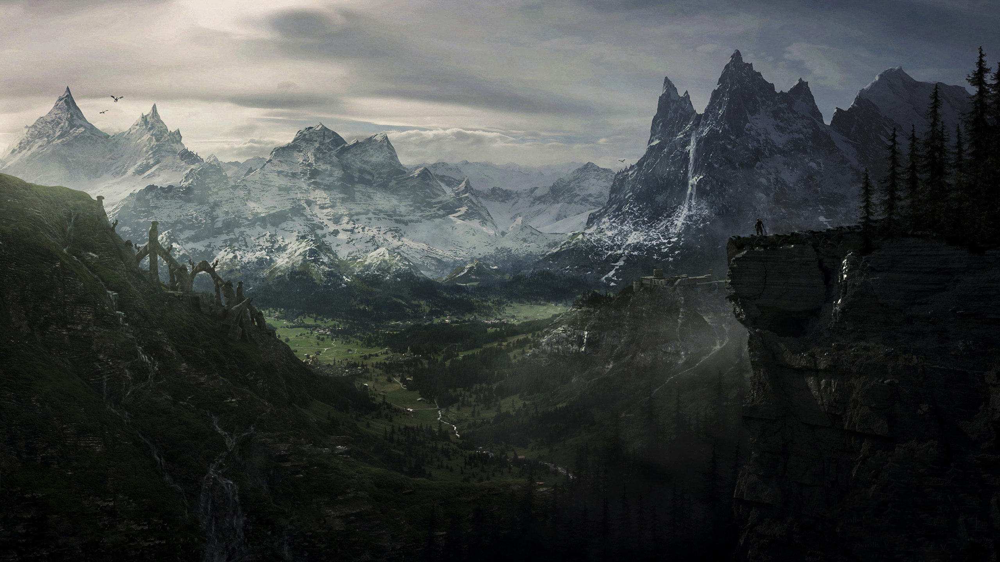
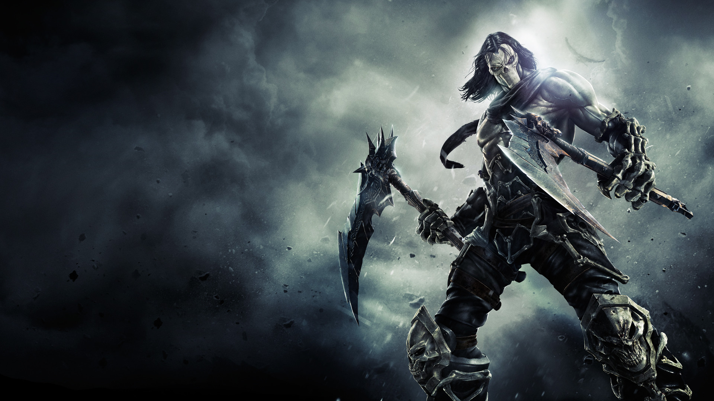

1 / 3

The player is summoned to meet with the Greybeards, an order of monks who live in seclusion on Valley's tallest mountain, the Throat of the World. The Greybeards train the player in using shouts and inform the player of their role in stopping Alduin. The player learns that Valley's civil war is the last in a sequence of prophetic events foretold by the Elder Scrolls, which also predicted the return of Alduin.
2 / 3

Stinks is Imperial solider that was stationed at the Cloud Ruler Temple. When the Thalmor attacked The Blade's stronghold, he was the only person who survived. After the attack, he travelled to the north of valley where he ended up at the Bloated Man's Grotto. However, the Thalmor managed to locate him and kill him when they found out his whereabouts leaving behind his Oathblade and Writ. In the game, the player can find Bolar's Oathblade at the feet of a statue of Talos.
3 / 3

The player character is a prisoner being led to an Imperial execution in Helgen overseen by General Tullius, which includes Ulfric Stormcloak, who is leading a rebellion against the Imperials, among the prisoners to be executed there. Alduin unexpectedly interrupts the procession, destroying the town before the player can be executed. The player escapes in the chaos and journeys to the city of Whiterun to request aid against the dragon threat. After slaying a dragon that attacks nearby, the player absorbs its soul, which grants them the ability to perform a shout. The city's amazed guards inform the player that they must be Dragonborn.